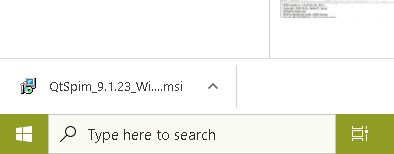

SPIM is a MIPS32 simulator written by
James R. Larus to support a course in compiler design
at the University of Wisconsin—Madison.
It has been improved and expanded and now
exists in several versions.
You probably want the version that runs on Microsoft Windows.
- Point your Web browser to
https://spimsimulator.sourceforge.net/
- Click on Download SPIM
- There are installers for several different operatings systems.
- For Windows systems click on QtSpim_9.1.23_Windows.msi
- Save the msi file, perhaps in the "Downloads" directory.
- Click on "QtSpim_9.1.23_Windows.msi" at the lower left of your screen.

- This will start the "Setup Wizard" to install QtSpim
- Click on the buttons as they are presented.